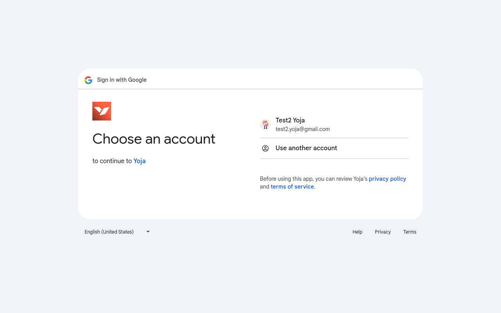
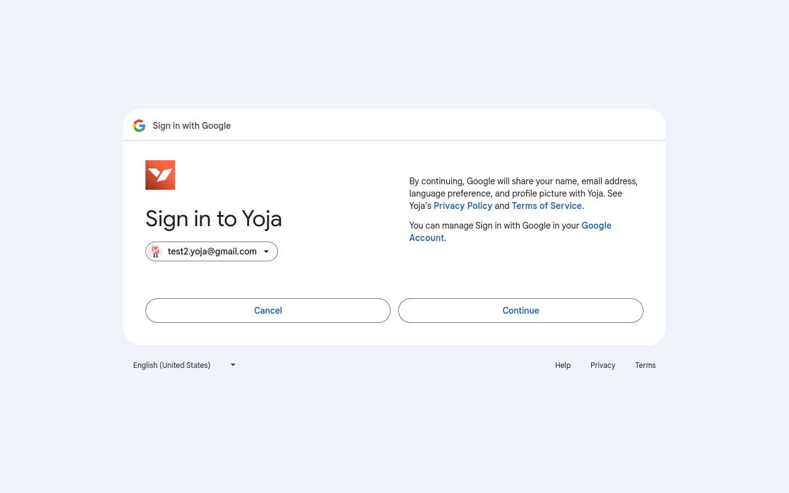
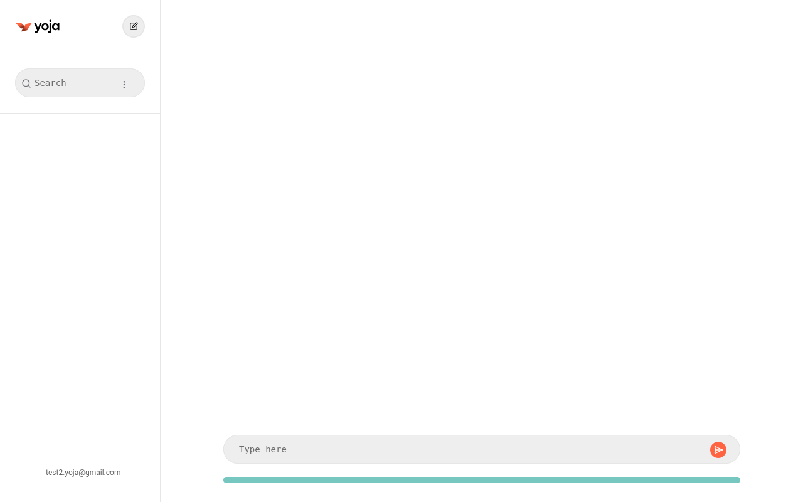
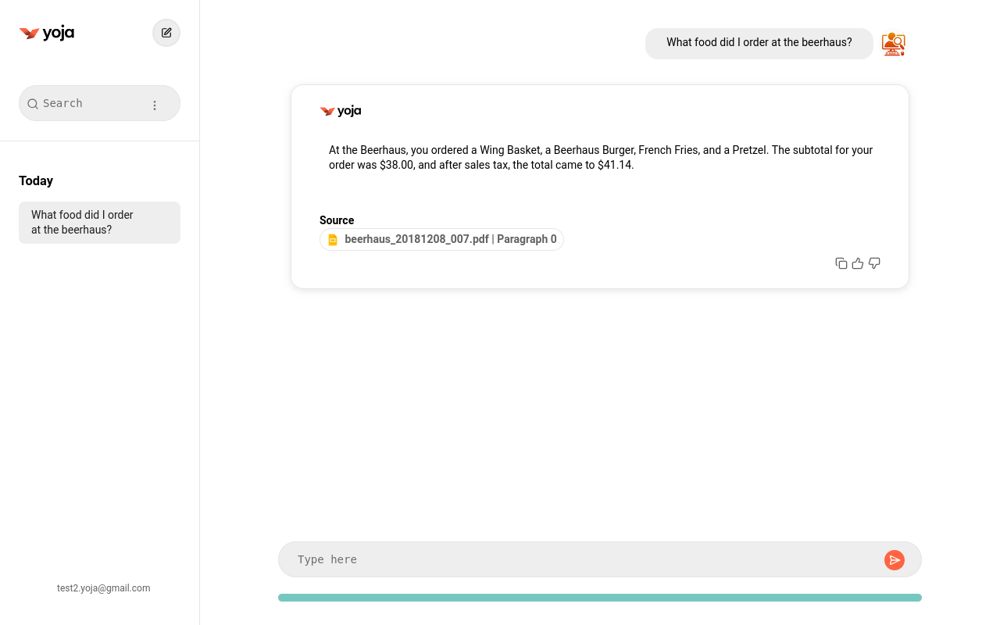

User Guide
Yoja is an AI Assistant with a built in RAG model for your Google Drive contents. While interacting with OpenAI during chat, Yoja provides tools to the LLM using the OpenAI Assistants API.
Login using Google
Use your Google credentials to login to Yoja.
Permissions
In the next screen Google will inform you that you are providing Yoja access to read your Google Drive documents. Please provide the Yoja sevice this essential permission. Rest assured, we value your privacy and confidentiality. We do not use your data for any purpose other than to provide you a contextually relevant chat experience. We do not sell your info to advertisers, neither do we use your data to train or fine tune our models.
Yoja main window
In the next screen Google will inform you that you are providing Yoja access to read your Google Drive documents. Please provide the Yoja sevice this essential permission. Rest assured, we value your privacy and confidentiality. We do not use your data for any purpose other than to provide you a contextually relevant chat experience. We do not sell your info to advertisers, neither do we use your data to train or fine tune our models.
Indexing progress
The format for spreadsheet documents are as follows:

- Indexing Progress Bar: if you hover over the progress bar, the progress percentage is displayed.
- In the left panel bottom, you have the user's name listed. Hovering over the username pops up the settings gear icon. You can configure Dropbox, Clear Chat History, etc.
- Yoja includes the ability to search chat history. You can also restart a previous chat with new questions.
- In the chat response, the context files chosen by Yoja is listed; clicking on the context source takes you directly to view the document.
Response
The response would appear like this:
